%3Cdefs%3E%3ClinearGradient id='bg' x1='0' y1='0' x2='1' y2='1'%3E%3Cstop offset='0%25' stop-color='%2308081a'/%3E%3Cstop offset='35%25' stop-color='%230b0b2e'/%3E%3Cstop offset='65%25' stop-color='%23150826'/%3E%3Cstop offset='100%25' stop-color='%2308081a'/%3E%3C/linearGradient%3E%3ClinearGradient id='sky' x1='0' y1='0' x2='0' y2='1'%3E%3Cstop offset='0%25' stop-color='%23ff6b35' stop-opacity='0.25'/%3E%3Cstop offset='25%25' stop-color='%23d63384' stop-opacity='0.12'/%3E%3Cstop offset='100%25' stop-color='transparent'/%3E%3C/linearGradient%3E%3ClinearGradient id='goldC' x1='0' y1='1' x2='1' y2='0'%3E%3Cstop offset='0%25' stop-color='%23ffd700' stop-opacity='0.15'/%3E%3Cstop offset='20%25' stop-color='%23ffb347' stop-opacity='0.5'/%3E%3Cstop offset='50%25' stop-color='%23ffd700' stop-opacity='0.9'/%3E%3Cstop offset='80%25' stop-color='%23ffec80' stop-opacity='0.7'/%3E%3Cstop offset='100%25' stop-color='%23ff6b35' stop-opacity='0.3'/%3E%3C/linearGradient%3E%3ClinearGradient id='cBlue' x1='0' y1='0' x2='1' y2='1'%3E%3Cstop offset='0%25' stop-color='%2300d4ff' stop-opacity='0.5'/%3E%3Cstop offset='100%25' stop-color='%230066cc' stop-opacity='0.15'/%3E%3C/linearGradient%3E%3ClinearGradient id='cPurple' x1='0' y1='0' x2='1' y2='1'%3E%3Cstop offset='0%25' stop-color='%239b59b6' stop-opacity='0.5'/%3E%3Cstop offset='100%25' stop-color='%235b2f8e' stop-opacity='0.15'/%3E%3C/linearGradient%3E%3ClinearGradient id='cGreen' x1='0' y1='0' x2='1' y2='1'%3E%3Cstop offset='0%25' stop-color='%232ecc71' stop-opacity='0.45'/%3E%3Cstop offset='100%25' stop-color='%231a8c5c' stop-opacity='0.15'/%3E%3C/linearGradient%3E%3ClinearGradient id='cRed' x1='0' y1='0' x2='1' y2='1'%3E%3Cstop offset='0%25' stop-color='%23e74c3c' stop-opacity='0.45'/%3E%3Cstop offset='100%25' stop-color='%23a93226' stop-opacity='0.15'/%3E%3C/linearGradient%3E%3Cfilter id='nb'%3E%3CfeGaussianBlur stdDeviation='4' result='b'/%3E%3CfeMerge%3E%3CfeMergeNode in='b'/%3E%3CfeMergeNode in='SourceGraphic'/%3E%3C/feMerge%3E%3C/filter%3E%3Cfilter id='ng'%3E%3CfeGaussianBlur stdDeviation='5' result='b'/%3E%3CfeMerge%3E%3CfeMergeNode in='b'/%3E%3CfeMergeNode in='b'/%3E%3CfeMergeNode in='SourceGraphic'/%3E%3C/feMerge%3E%3C/filter%3E%3C/defs%3E%3Crect width='1200' height='630' fill='url(%23bg)'/%3E%3Crect width='1200' height='630' fill='url(%23sky)'/%3E%3Cg opacity='0.04'%3E%3Cpattern id='grid' width='60' height='60' patternUnits='userSpaceOnUse'%3E%3Cpath d='M 60 0 L 0 0 0 60' fill='none' stroke='%2300d4ff' stroke-width='0.5'/%3E%3C/pattern%3E%3Crect width='1200' height='630' fill='url(%23grid)'/%3E%3C/g%3E%3Cg opacity='0.06'%3E%3Crect x='30' y='500' width='40' height='130' fill='%231a1a4e'/%3E%3Crect x='80' y='480' width='35' height='150' fill='%231a1a4e'/%3E%3Crect x='125' y='510' width='60' height='120' fill='%231a1a4e'/%3E%3Crect x='200' y='460' width='28' height='170' fill='%231a1a4e'/%3E%3Crect x='240' y='490' width='50' height='140' fill='%231a1a4e'/%3E%3Crect x='310' y='440' width='25' height='190' fill='%231a1a4e'/%3E%3Crect x='350' y='470' width='42' height='160' fill='%231a1a4e'/%3E%3Crect x='410' y='430' width='30' height='200' fill='%231a1a4e'/%3E%3Crect x='455' y='465' width='35' height='165' fill='%231a1a4e'/%3E%3Crect x='510' y='450' width='28' height='180' fill='%231a1a4e'/%3E%3Crect x='550' y='480' width='45' height='150' fill='%231a1a4e'/%3E%3Crect x='610' y='420' width='22' height='210' fill='%231a1a4e'/%3E%3Crect x='645' y='460' width='38' height='170' fill='%231a1a4e'/%3E%3Crect x='700' y='445' width='32' height='185' fill='%231a1a4e'/%3E%3Crect x='750' y='475' width='48' height='155' fill='%231a1a4e'/%3E%3Crect x='815' y='455' width='26' height='175' fill='%231a1a4e'/%3E%3Crect x='855' y='485' width='40' height='145' fill='%231a1a4e'/%3E%3Crect x='910' y='440' width='30' height='190' fill='%231a1a4e'/%3E%3Crect x='955' y='470' width='35' height='160' fill='%231a1a4e'/%3E%3Crect x='1005' y='495' width='50' height='135' fill='%231a1a4e'/%3E%3Crect x='1070' y='460' width='28' height='170' fill='%231a1a4e'/%3E%3Crect x='1110' y='490' width='45' height='140' fill='%231a1a4e'/%3E%3Crect x='1160' y='510' width='40' height='120' fill='%231a1a4e'/%3E%3C/g%3E%3Cg opacity='0.25'%3E%3Cline x1='200' y1='0' x2='280' y2='630' stroke='%2300d4ff' stroke-width='0.5'/%3E%3Cline x1='230' y1='0' x2='310' y2='630' stroke='%2300d4ff' stroke-width='0.5' opacity='0.5'/%3E%3Cline x1='260' y1='0' x2='340' y2='630' stroke='%237b2ff7' stroke-width='0.5'/%3E%3Cline x1='170' y1='0' x2='250' y2='630' stroke='%237b2ff7' stroke-width='0.5' opacity='0.4'/%3E%3C/g%3E%3Ccircle cx='220' cy='60' r='2' fill='%2300d4ff' class='da'/%3E%3Ccircle cx='250' cy='90' r='1.5' fill='%237b2ff7' class='db'/%3E%3Cg filter='url(%23ng)'%3E%3Cpath d='M-20,610 Q140,590 300,580 Q440,540 510,460 Q560,390 600,310 Q630,250 660,200 Q690,160 730,130 Q780,100 850,85 Q950,68 1080,55 Q1150,48 1220,45' stroke='url(%23goldC)' stroke-width='5' fill='none' stroke-linecap='round'/%3E%3C/g%3E%3Ccircle cx='510' cy='460' r='6' fill='%23ffd700' opacity='0.9' class='pulse'/%3E%3Ctext x='495' y='445' text-anchor='end' fill='%23ffd700' font-size='12' opacity='0.8' font-family='monospace'%3E%E6%8B%90%E7%82%B9%3C/text%3E%3Cg transform='translate(600,60)'%3E%3Crect x='-180' y='-28' width='360' height='56' rx='6' fill='%230a0a2e' stroke='%2300d4ff' stroke-width='0.8' opacity='0.8'/%3E%3Ctext x='0' y='2' text-anchor='middle' fill='%2300d4ff' font-size='22' font-family='monospace' font-weight='bold' filter='url(%23nb)'%3E%E5%AE%A2%E6%88%B7%E4%BB%A3%E9%99%85%E8%8C%83%E5%BC%8F%E7%90%86%E8%AE%BA%3C/text%3E%3Ctext x='0' y='20' text-anchor='middle' fill='%23888' font-size='11' font-family='sans-serif' opacity='0.7'%3E%E7%AE%97%E5%8A%9B%E6%88%90%E6%9C%AC%E8%B6%85%E6%8C%87%E6%95%B0%E5%B4%A9%E5%A1%8C%E9%A9%B1%E5%8A%A8%E4%BA%A7%E4%B8%9A%E4%BB%A3%E9%99%85%E6%9B%B4%E6%9B%BF%3C/text%3E%3C/g%3E%3Cg transform='translate(340,185)'%3E%3Crect x='-130' y='-24' width='260' height='48' rx='5' fill='%2308082a' stroke='%2300d4ff' stroke-width='1.2' opacity='0.95'/%3E%3Crect x='-128' y='-22' width='256' height='44' rx='4' fill='url(%23cBlue)' opacity='0.5'/%3E%3Ctext x='0' y='4' text-anchor='middle' fill='%2300d4ff' font-size='15' font-weight='bold' filter='url(%23nb)'%3EL1 %E8%8A%AF%E7%89%87%E5%B1%82%20%C2%B7%20%E7%88%86%E5%8F%91%E5%88%9D%E6%9C%9F%3C/text%3E%3Ctext x='0' y='18' text-anchor='middle' fill='%2366d9ff' font-size='10' opacity='0.6'%3ENVIDIA %C2%B7 AMD %C2%B7 %E5%8D%8E%E4%B8%BA%E6%98%87%E8%85%BE%3C/text%3E%3C/g%3E%3Cg transform='translate(340,278)'%3E%3Crect x='-130' y='-24' width='260' height='48' rx='5' fill='%230a0a2e' stroke='%239b59b6' stroke-width='1.2' opacity='0.95'/%3E%3Crect x='-128' y='-22' width='256' height='44' rx='4' fill='url(%23cPurple)' opacity='0.5'/%3E%3Ctext x='0' y='4' text-anchor='middle' fill='%23be74e0' font-size='15' font-weight='bold' filter='url(%23nb)'%3EL2 %E6%A8%A1%E5%9E%8B%E5%B1%82%20%C2%B7%20%E7%88%86%E5%8F%91%E4%B8%AD%E6%9C%9F%3C/text%3E%3Ctext x='0' y='18' text-anchor='middle' fill='%23be74e0' font-size='10' opacity='0.6'%3EOpenAI %C2%B7 Anthropic %C2%B7 DeepSeek %C2%B7 Google%3C/text%3E%3C/g%3E%3Cg transform='translate(340,371)'%3E%3Crect x='-130' y='-24' width='260' height='48' rx='5' fill='%23081a0a' stroke='%232ecc71' stroke-width='1.2' opacity='0.95'/%3E%3Crect x='-128' y='-22' width='256' height='44' rx='4' fill='url(%23cGreen)' opacity='0.5'/%3E%3Ctext x='0' y='4' text-anchor='middle' fill='%232ecc71' font-size='15' font-weight='bold' filter='url(%23nb)'%3EL3a AIGC %C2%B7 %E8%B6%85%E6%8C%87%E6%95%B0%E7%88%86%E5%8F%91%E6%9C%9F%3C/text%3E%3Ctext x='0' y='18' text-anchor='middle' fill='%232ecc71' font-size='10' opacity='0.6'%3E%E5%86%85%E5%AE%B9%E5%B9%B3%E5%8F%B0%20%C2%B7%20%E7%94%B5%E5%95%86%20%C2%B7%20%E8%A7%86%E9%A2%91%E7%94%9F%E6%88%90%3C/text%3E%3C/g%3E%3Cg transform='translate(620,385)' opacity='0.55'%3E%3Cline x1='-60' y1='0' x2='0' y2='0' stroke='%23d35400' stroke-width='0.5'/%3E%3Ctext x='-65' y='4' text-anchor='end' fill='%23d35400' font-size='11'%3EL3b %E9%80%9A%E7%94%A8AI%20%C2%B7%20%E7%A8%B3%E6%80%81%E5%A2%9E%E9%95%BF%3C/text%3E%3C/g%3E%3Cg transform='translate(340,464)'%3E%3Crect x='-130' y='-24' width='260' height='48' rx='5' fill='%231a0808' stroke='%23e74c3c' stroke-width='1.2' opacity='0.95'/%3E%3Crect x='-128' y='-22' width='256' height='44' rx='4' fill='url(%23cRed)' opacity='0.5'/%3E%3Ctext x='0' y='4' text-anchor='middle' fill='%23e74c3c' font-size='15' font-weight='bold' filter='url(%23nb)'%3EL4 %E5%B9%BF%E4%B9%89%E6%9C%BA%E5%99%A8%E4%BA%BA%20%C2%B7%20%E8%90%8C%E8%8A%BD%E6%9C%9F%3C/text%3E%3Ctext x='0' y='18' text-anchor='middle' fill='%23e74c3c' font-size='10' opacity='0.6'%3E%E8%87%AA%E5%8A%A8%E9%A9%BE%E9%A9%B6%20%C2%B7%20%E4%BA%BA%E5%BD%A2%E6%9C%BA%E5%99%A8%E4%BA%BA%20%C2%B7%20%E5%B7%A5%E4%B8%9A%E6%9C%BA%E5%99%A8%E4%BA%BA%3C/text%3E%3C/g%3E%3Cg opacity='0.2'%3E%3Cpath d='M680,500 Q920,460 1020,360 Q1070,310 1050,260' stroke='%2300d4ff' stroke-width='0.6' fill='none' stroke-dasharray='5,4'/%3E%3Ctext x='920' y='420' fill='%2300d4ff' font-size='10' opacity='0.7'%3E%E6%95%B0%E6%8D%AE%E5%9B%9E%E6%B5%81%20%C2%B7%20%E9%94%99%E4%BD%8D4-8%E5%B9%B4%3C/text%3E%3C/g%3E%3Cg opacity='0.25'%3E%3Ctext x='30' y='615' fill='%23888' font-size='10'%3E2026 %C2%B7 G4%3C/text%3E%3Ctext x='1170' y='615' text-anchor='end' fill='%23888' font-size='10'%3E%E5%AE%A2%E6%88%B7%E4%BB%A3%E9%99%85%E8%8C%83%E5%BC%8F v5.2%3C/text%3E%3C/g%3E%3C/svg%3E" alt="客户代际范式四层价值链·赛博朋克题图">当所有人都盯着英伟达股价、OpenAI融资、DeepSeek降本时，很少有人问一个根本问题：AI产业这盘棋，到底在按什么规则下？
花三年时间拆了四层价值链、做了六维逻辑推演后，我发现所有AI新闻都可以用一个框架来理解。
一句话：算力成本沿超指数曲线崩塌，驱动产业链从芯片到机器人逐级重构。
这不是什么"时代滚滚向前"的鸡汤。它是四条因果链相互咬合的结构现实：
L1 芯片层 → L2 模型层 → L3 应用层(AIGC+通用AI) → L4 广义机器人层(含自动驾驶)
每一层有自己的节奏、自己的系数、自己的约束界面。各层的启动时间错位4-8年——这个"错位"本身，就是G4当前最大的结构性特征。
| 层级 | 启动时间 | 当前阶段 | 类比 |
|---|---|---|---|
| L1 芯片 | 2022+ | 爆发初期 | 像PC的1995年 |
| L2 模型 | 2020+ | 爆发中期 | 像PC的2000年 |
| L3a AIGC | 2024+ | 爆发早期 | 像移动的2010年 |
| L3b 通用AI | 2025+ | 萌芽-试点期 | 像移动的2008年 |
| L4 机器人 | 2028+(预测) | 萌芽期 | 像移动的2007年 |
大多数人分不清"指数"和"超指数"。
它们的区别不是"快一点"和"快很多"——是质变。
月度增长系数公式给出了一条量化边界：月度系数 > 2.0 且持续3个月以上 = 达到超指数拐点。
AIGC领域第一个月跑出5.2×系数的案例是真实存在的。不是吹牛，是公式算出来的。
每一层有自己的超指数公式。
| 层级 | 核心公式 | 当前系数 | 窗口长度 |
|---|---|---|---|
| L1 芯片 | 制程×架构×AI辅助设计 | ~1.4-1.8x/代 | 8-12年 |
| L2 模型 | 预训练×推理优化×蒸馏×数据回流 | ~2.69x/年 | 3-6年 |
| L3a AIGC | 模型×数据×流程×格式扩张 | ~2-5x/月 | 12-48月 |
| L3b 通用AI | 模型×数据×行业集成(无格式扩张) | 无超指数 | 不存在 |
| L4 机器人 | 仿真×真实数据×硬件迭代 | 无超指数 | 2030+ |
重点看L3b——通用AI（制造/教育/医疗）不可能有真正的超指数。不是因为技术不够，是因为反馈时延是天-月级，这是物理约束。公式算死了，不是努力能突破的。
这就是为什么干内容的和干医疗的，时间是不同维度的东西。
L1 芯片层 英伟达有CUDA壁垒（400万开发者），但AI芯片层才到1995年——格局远未定型。终端推理芯片（手机、PC、IoT）才是最大增量市场。
L2 模型层 3-5家共存格局：OpenAI占高端认知、Anthropic走安全溢价、DeepSeek打成本效率、Google做全栈嵌入、Meta做开源。不会单一赢家通吃——模型层会变成一种"商品化+差异化"的双层市场。
L3a AIGC 应用层 最可能被率先引爆的是内容平台（字节、快手），不是模型公司。因为约束界面不在模型，在推荐算法和创作者锁定。
L3b 通用AI 应用层 慢启动、永锁定。每个行业3-5年窗口，先跑通ROI的供应商不可替代。没有超指数红利，但有稳定现金流。
L4 广义机器人层 特斯拉是唯一有数据飞轮的玩家（FSD每天数百万辆车的真实数据）。人形机器人数据稀缺——除非仿真技术出现数量级突破。
把一个框架真正有价值的检验方法，不是看它解释了多少已知事实，而是看它能否推翻常识。
结论一：英伟达的超溢价窗口不超过3-5年。不是因为它不优秀，是因为多架构并存的格局尚未出现。
结论二：内容平台的G4价值可能超过任何模型公司。因为三个维度叠加——秒级反馈、10¹²/天数据量、48个月格式扩张窗口——它就是三个飞轮中跑得最快的那一个。
结论三：通用AI不会出现"独角兽一夜爆发"。天-月级的反馈时延决定了超指数不可能发生。谁不接受这个边界，谁就会在估值模型中犯错。
| 分类 | 规律 |
|---|---|
| 基础律 | 客户更替间隔律 |
| 需求频率跃迁律 | |
| 系统重构律 | |
| 代际加速律 | |
| 超指数专属律 | 自终结律 |
| 系数接力律 | |
| 反馈时延律 | |
| 格式扩张律 | |
| 层专属律 | 时间壁垒律(L1) · 多界面共存律(L2) · 双轨错位律(L3) · 物理先行律(L4) |
| 层级错位启动律 · 芯片层多极化律 · 跨层反馈律 | |
一个框架给你什么
有了这个坐标系，你再看到任何AI新闻时，你不需要"预测未来"——你只需要知道自己在哪一层、当前系数如何、窗口还剩多久。这就够了。
📮 分享给一个做投资或做产品的朋友
看看他们能不能一眼看出自己公司在哪一层。
💬 今日话题
你觉得自己所在的业务，对应四层中的哪一层？它的约束界面是什么？
👀 点个"在看"
让更多人学会用这个框架做判断，比追着新闻跑强得多。